| K-file title | Simplified Paracute_0828 CHUTE kg-m-s |
|---|---|
| Units | kg-m-s |
| Parts | PID 11: Para_Surf PID 12: PARA_String PID 14: Air |
| Fluid domain & mesh | cylinder: y=[-0.900, 0.568] m, R=0.522 m cells=28640, faces=89036 |
| Materials | MID 21 (FABRIC): ro=533.77, ea=43090000.0, eb=0.0, prba=0.14, prab=0.0, gab=0.0, cse=0.0, el=0.0, prl=0.0, lratio=0.0, damp=0.0, aopt=0.0, tsrfac=0.0, a1=0.0, a2=0.0, a3=0.0 MID 22 (PLASTIC_KINEMATIC): ro=462.0, e=970000000.0, pr=0.35, sigy=1000000000.0, etan=0.0, beta=0.0 MID 24 (NULL): ro=1.18, pc=-0.001, mu=0.001 |
| Equation of state | EOS 24 (LINEAR_POLYNOMIAL): eosid=24, c0=0.0, c1=0.0, c2=0.0, c3=0.0, c4=0.4, c5=0.4, c6=0.0, e0=250000.0, v0=1.0 |
| Solver & coupling settings | endtime=0.05 s, cfl=0.5, tssfac=0.8 inflow: constant 220.0 m/s (vel_scale=1.0) fluid: ALE Eulerian, Rusanov flux, ideal gas (rho0=1.1800, e0=250000.0, p0=100000.0 Pa) FSI penalty coupling: omega=0.2, cdamp=1.0, pfac=None, pleak=0.1, leak_cap=None, mach_cap=0.3, p_cap=None structure: mass_scale=1.0, membrane_tension_only=True, eb_frac=0.05, eb_stab_frac=None bending: bend_scale=1.0, bend_damp=0.0 damping: struct_damping=100.0 1/s, struct_damping_vmax=30.0 m/s (smart gate) shell: THEORY=5, BWC=2, IHQ=1, hg_qh=0.1 contact: enabled=True, scale=1.0, vdc=None |
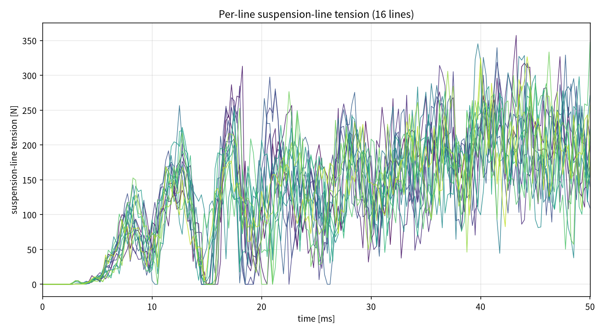
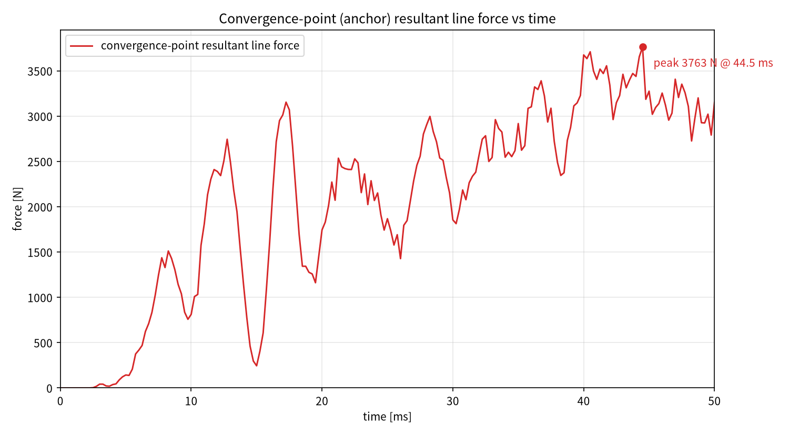
原始数据见 data/ 目录下的
.dat 文件（列：时间 ms，力 N）。
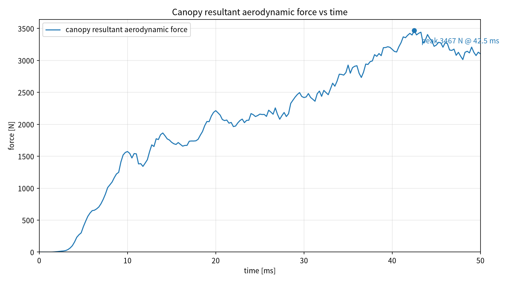
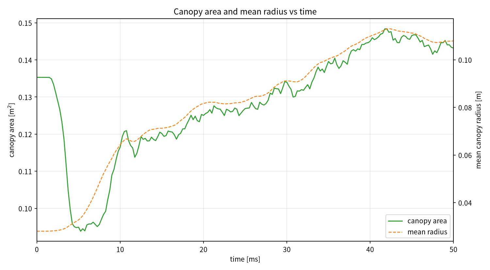
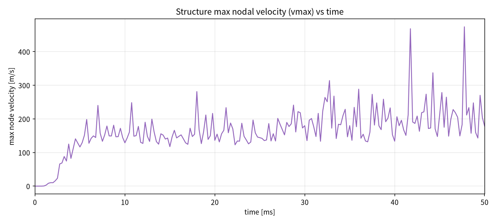
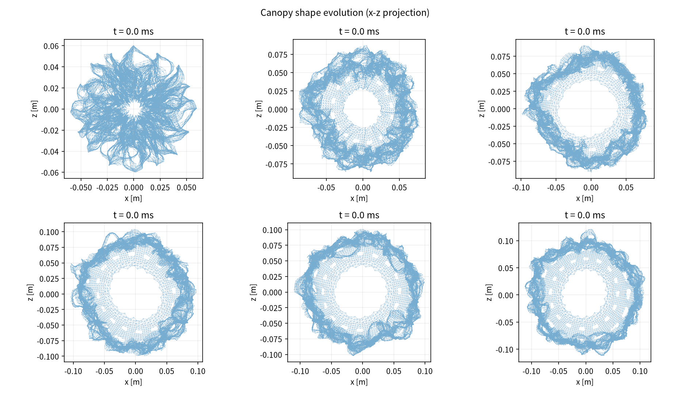
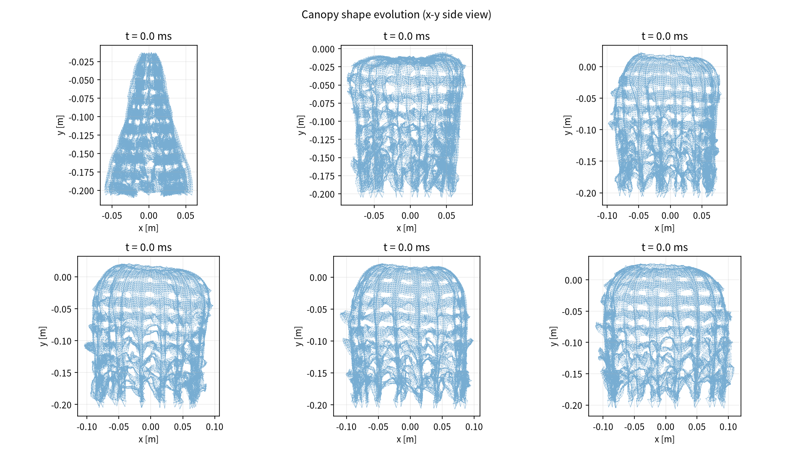
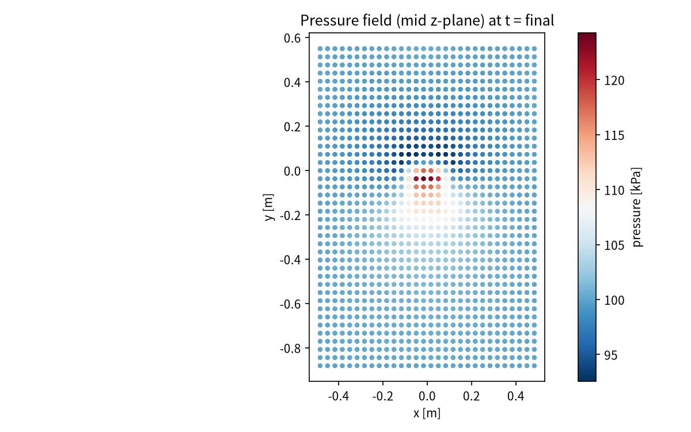
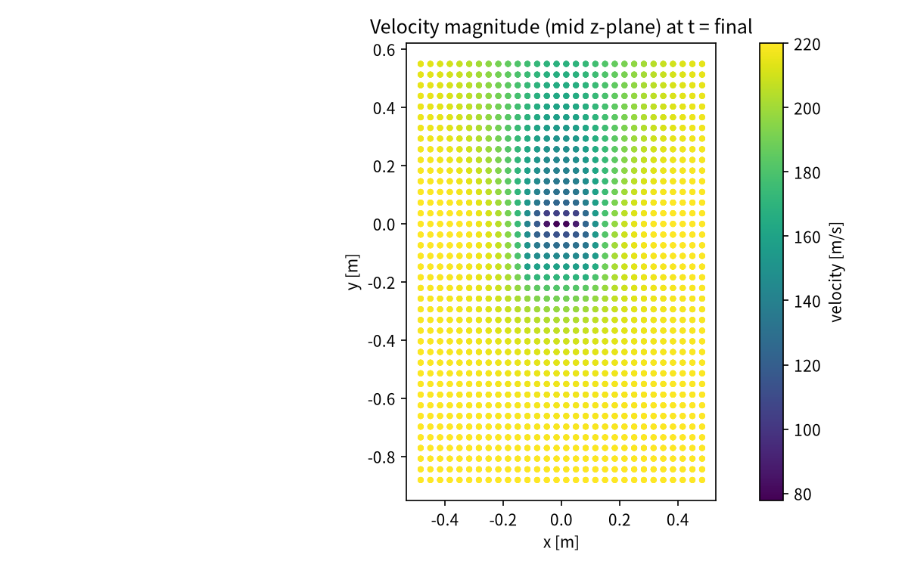
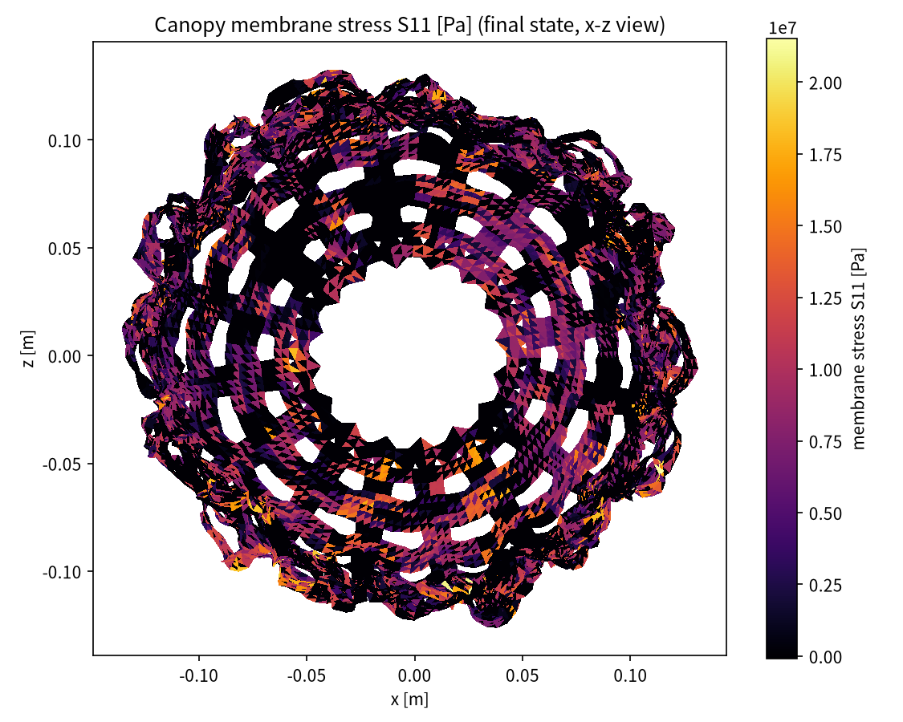
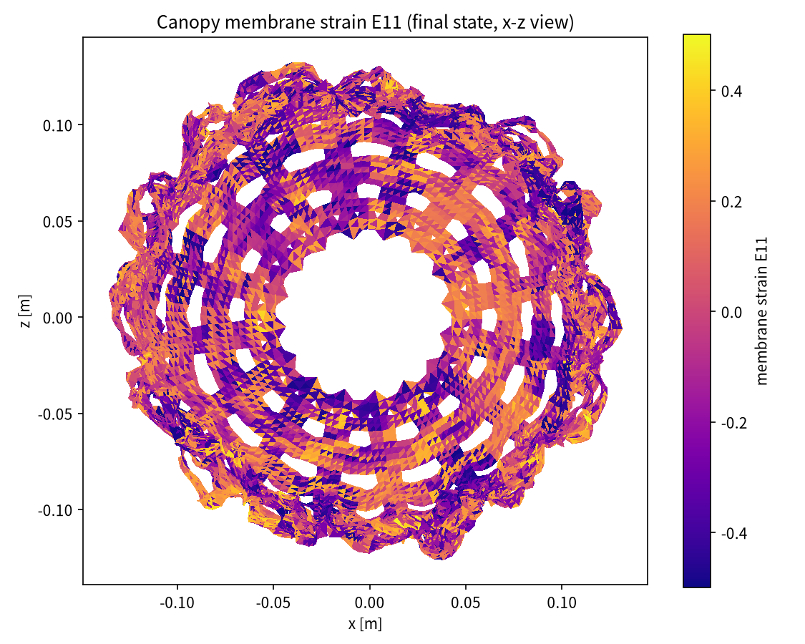
Animation of the pressure field (left) and canopy tension (right) over the full inflation.
data/*.dat — 所有曲线的原始数据（空格分隔，首行为列名注释）figures/*.png — 报告中所有图片figures/canopy_inflation.mp4 — 展开过程动画history.csv — 完整时程历史line_force.csv — 逐伞绳张力时程state_*_fluid.vtk / *_structure.vtk — 各时刻流场/结构 VTK